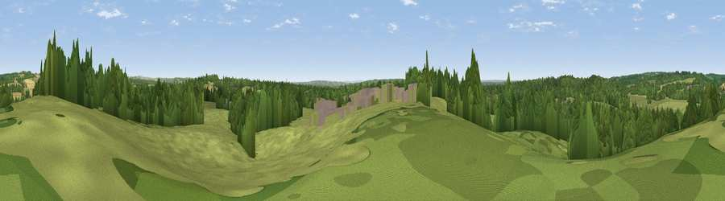

Ladwell
#35046 in England · top 49% of its area beats it · near HursleyWhere it is
The exact computed spot (SU 42828 23765). Click the marker for map links.
The view, rendered

A 360° render of this exact spot computed from the terrain model, tree cover and land cover — summer colours, afternoon light, calibrated against photographs of famous viewpoints. Real trees, hedges and buildings will differ in detail.
The panorama
Grey silhouette: terrain skyline in each direction (720 bearings, Earth curvature and refraction included). Dashed green: skyline with trees (+15 m) and buildings (+8 m) as obstacles. Blue strip: how far the ground is visible on each bearing.
Where the view opens
Wedge length = distance to the farthest visible ground on that bearing (vegetation-aware). Rings at 10, 25 and 50 km.
What fills the view
46% grassland · 41% woodland · 11% cropland · 3% built-up
Angular shares of the visible panorama (visual magnitude), not map area. Landscape diversity 0.46 (0–1 Shannon).
Key numbers
More beautiful places nearby
The staircase of upgrades: each row has a higher view potential than everything closer. Driving times are estimates from straight-line distance, calibrated against real road routing — check an actual route before setting out.
| Place | Direction | Drive | Score |
|---|---|---|---|
| Cranbury Park | ESE · 2 km | ~5 min | 45.8 |
| Viewpoint near Compton | NE · 4 km | ~9 min | 47.1 |
| Violet Hill | NNW · 4 km | ~9 min | 55.7 |
| Viewpoint near Sparsholt | NNW · 6 km | ~13 min | 66.9 |
| Beacon Hill | E · 17 km | ~30 min | 71.7 |
| Viewpoint near Meonstoke | E · 21 km | ~36 min | 74.8 |
| Viewpoint near Southwick | SE · 27 km | ~44 min | 76.6 |
| Viewpoint near Buriton | E · 29 km | ~46 min | 80.0 |
51.01168, -1.39089 · source: osm peak · position refined by local search. Computed location — check access rights before visiting.